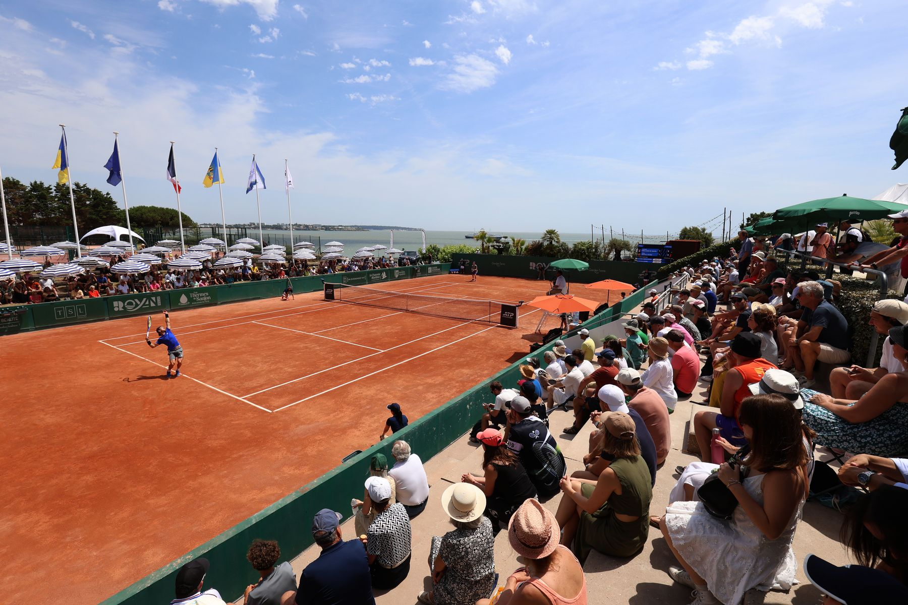
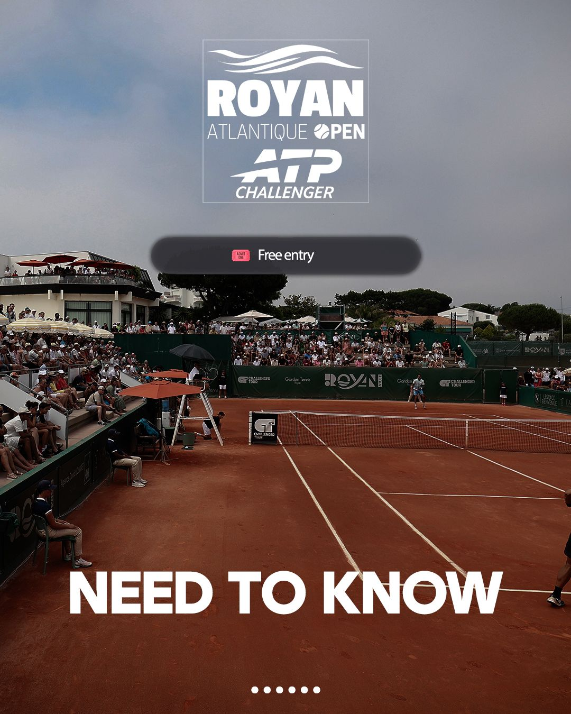
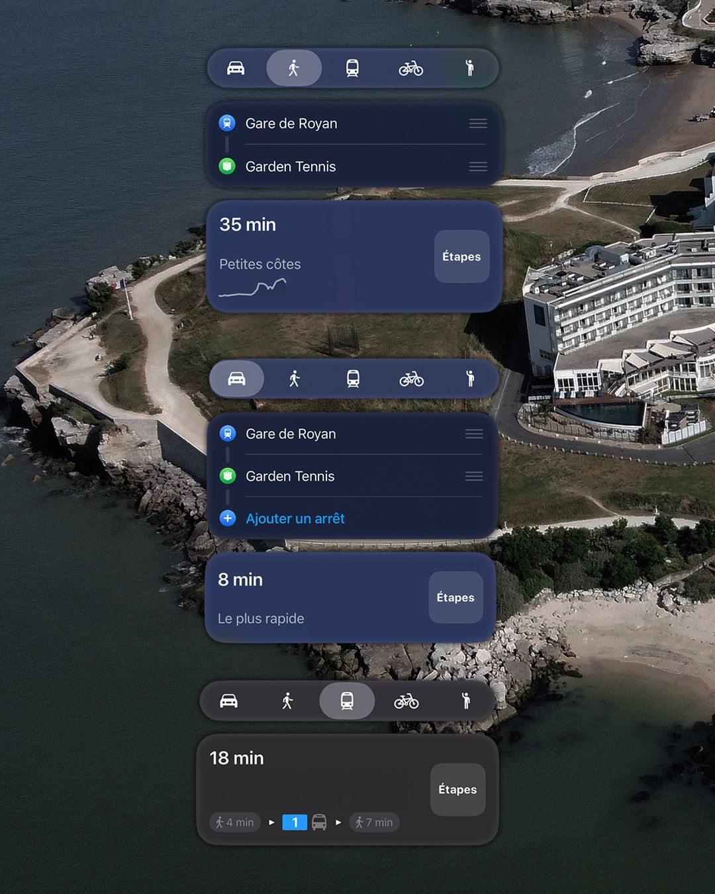
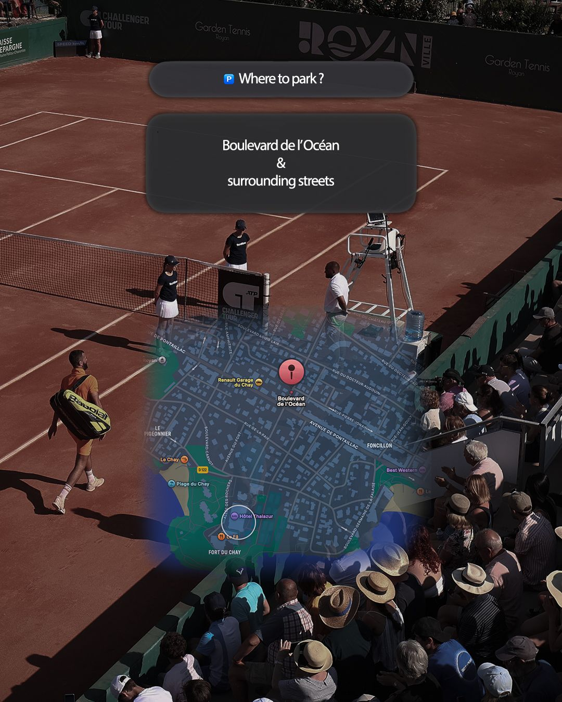
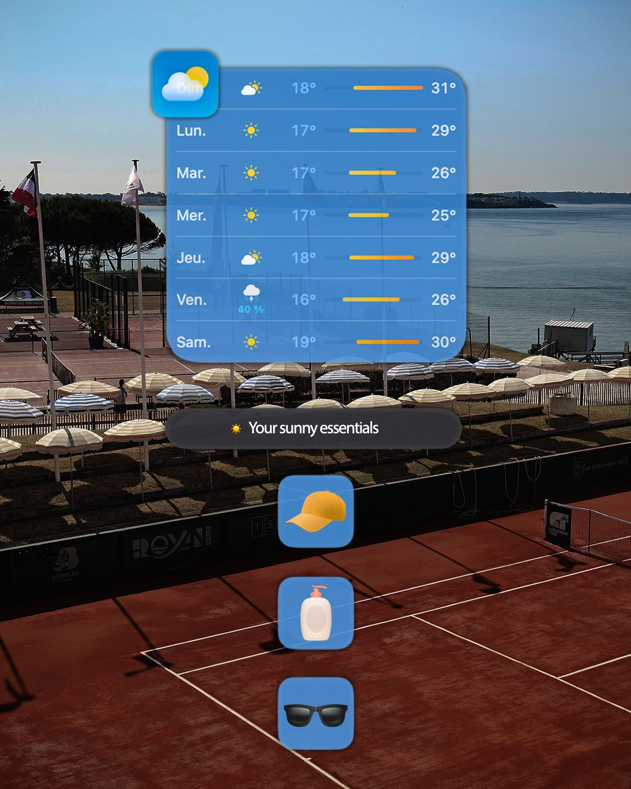
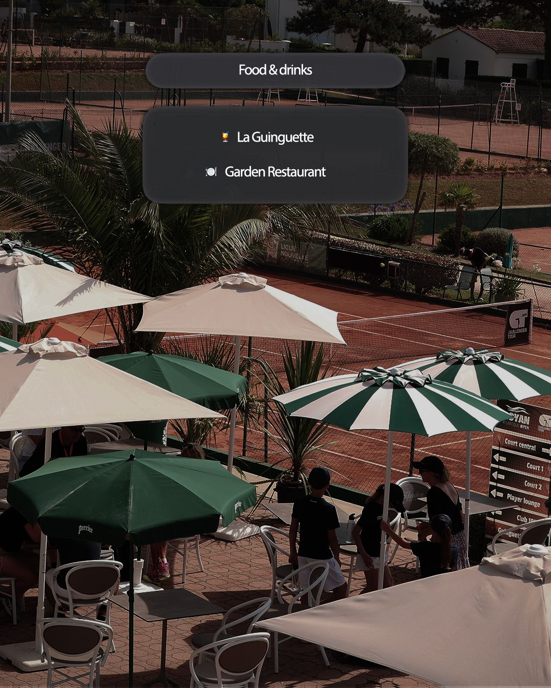
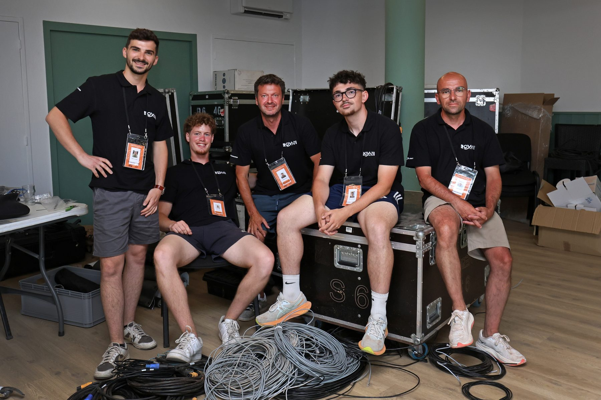
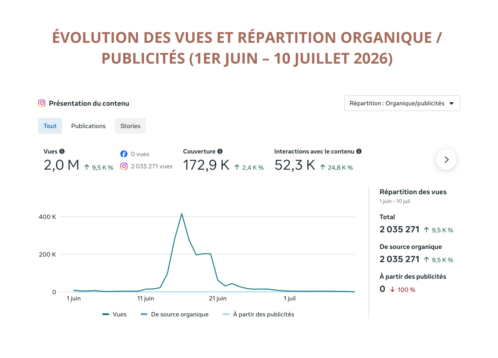
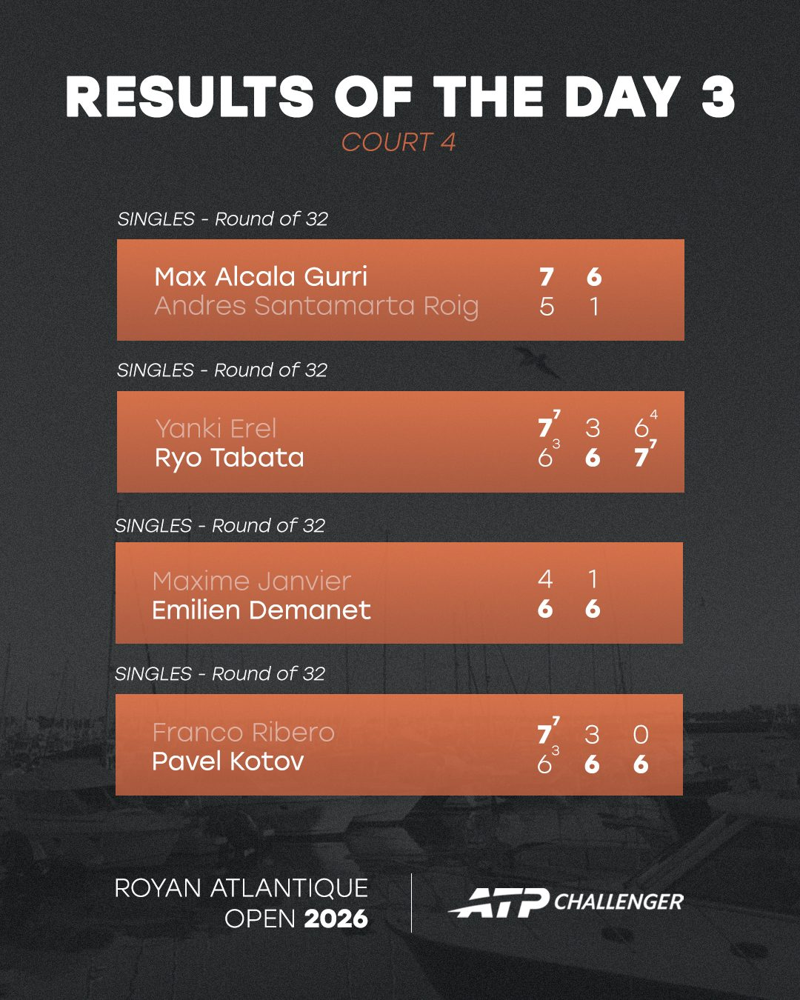

Identité graphique & projet web
Participation au travail d’identité et aux réflexions liées au développement digital du projet OPEN 17.

Douze semaines au sein de la communication digitale du Garden Tennis, avec un temps fort : piloter et produire la communication sociale d’un tournoi ATP Challenger 50.
Le Royan Atlantique Open 2026 n’était pas un exercice de communication théorique : chaque journée imposait de produire, publier, réagir et parfois revoir le plan prévu quelques heures plus tôt.
Mon stage au Garden Tennis de Royan s’est inscrit dans cet environnement. En parallèle de projets plus structurants pour le Groupe TSL, j’ai participé à la préparation du tournoi puis à sa couverture digitale, en particulier sur Instagram.
L’objectif : rendre l’événement visible et vivant en ligne sans perdre le lien avec ce qui se passait réellement sur le terrain.
Planning éditorial, publications, stories, scores et suivi des performances.
Reels, interviews, montage, formats courts et déclinaisons graphiques.
Couverture live, coordination, installation et gestion d’imprévus.
Accès, restauration, météo, déplacements : cette série rassemble les informations pratiques dans un format pensé pour Instagram.





Travail éditorial et post-production sur une série d’interviews diffusées pendant le tournoi. Les previews sont volontairement courtes pour garder le site rapide ; chaque carte mène vers la publication Instagram originale.

Installation, gestion des bénévoles et accréditations, appui opérationnel et résolution de problèmes faisaient partie de l’expérience. Cette polyvalence est devenue une vraie composante de mon approche de la communication événementielle.
Les chiffres viennent compléter le travail créatif : ils permettent d’identifier les formats qui fonctionnent, d’ajuster la couverture et d’orienter la suite de la stratégie éditoriale.

Deux chantiers complémentaires menés pendant le stage, utiles pour comprendre l’étendue des missions sans alourdir la lecture principale de l’étude de cas.
Participation au travail d’identité et aux réflexions liées au développement digital du projet OPEN 17.
Participation à la réflexion et à la conception d’une boutique commune au réseau. Les maquettes internes ne sont volontairement pas publiées sur ce portfolio public.
Ce stage a renforcé une conviction : en événementiel, la meilleure communication n’est pas seulement créative. Elle doit être réactive, compréhensible, mesurable et capable de suivre le rythme du terrain.
Construire un langage visuel adapté au tournoi.
La priorité n’était pas de remplir un feed : chaque format avait une fonction — identifier un joueur, transmettre un score ou rendre une information lisible en quelques secondes.
Résumer la journée sans perdre la lisibilité.
Plusieurs résultats réunis dans un même visuel 4:5, avec une hiérarchie pensée pour que l’information reste compréhensible au premier regard.
